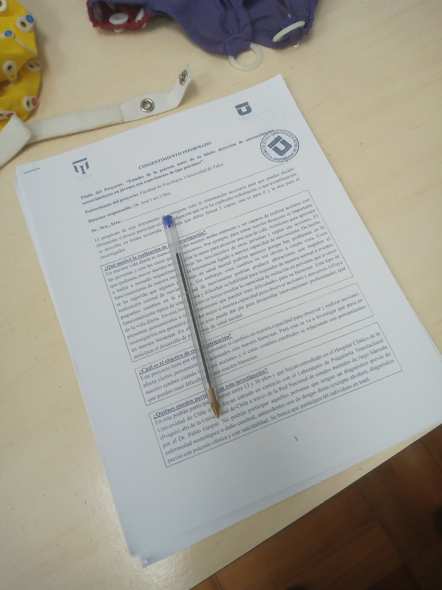
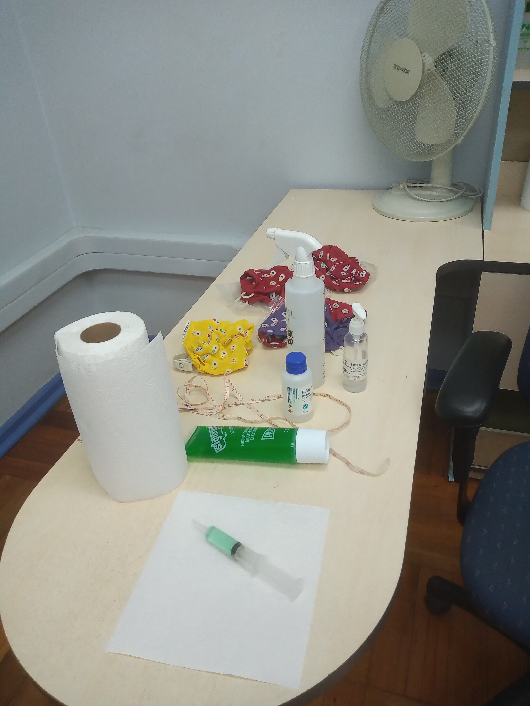
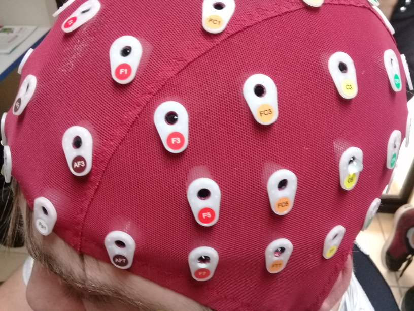
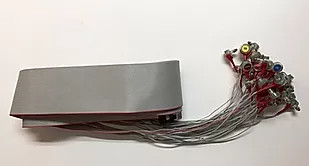
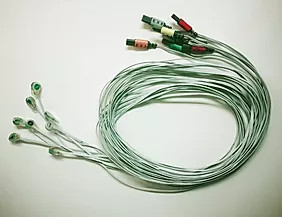
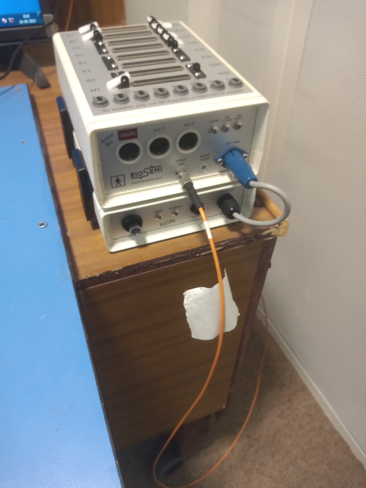
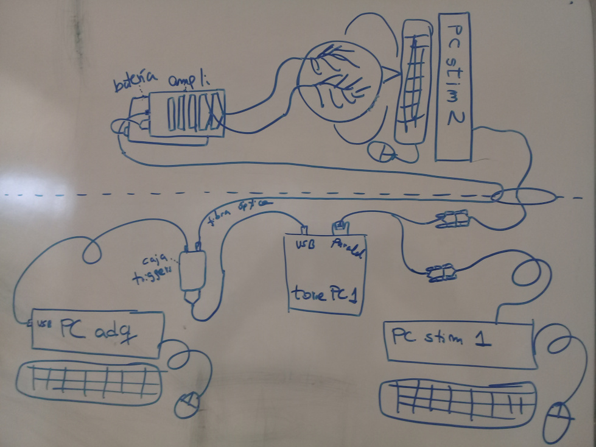
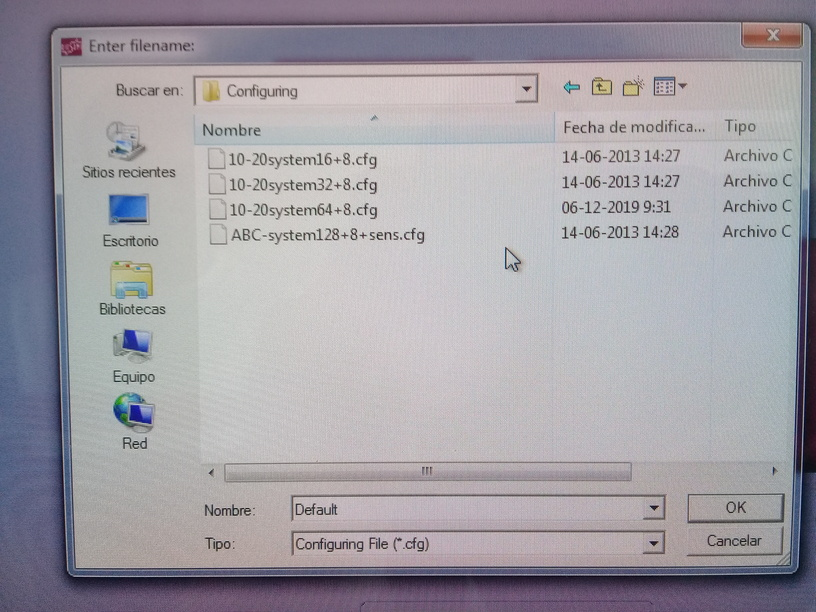
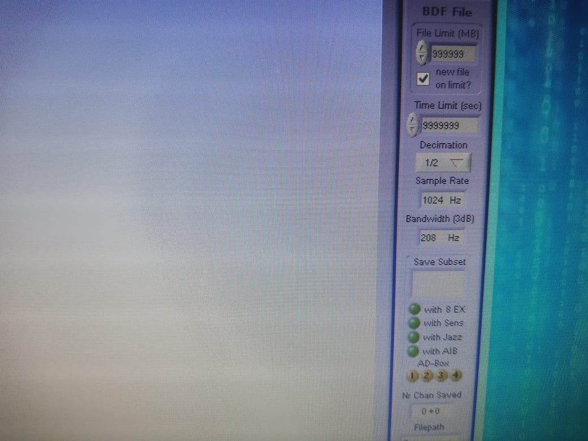
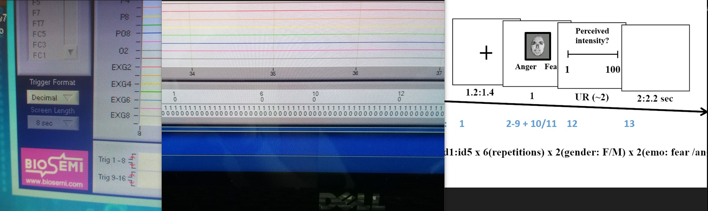

Capítulo 4 Registro del EEG
4.1 Conceptos importantes
El electroencefalograma (EEG) comprende el registro de la actividad cerebral mediante electrodos. Vamos a considerar los distintos aspectos de este registro.
4.1.1 El equipo de registro
- Sistema de 64 canales EEG (registra señales cerebrales) + 8 EXG opcionales (registra artefactos fisiológicos)
- Señal DC-acoplada, 24 bits, bajo ruido
- Tasa de sampleo: hasta 2048 Hz
- Software de adquisición: ActiView
4.1.2 Qué se registra?
- Se registra la actividad eléctrica que aparece en el cuero cabelludo
- Esta actividad de expresa en el orden de los microvoltios
4.1.3 Electrodos, referencia y tierra
Existen los siguientes componentes que son importantes:
- Electrodos: Sensores que miden diferencias de potencial en el cuero cabelludo
- Referencia: Punto respecto al cual se mide la actividad eléctrica de cada canal
- Tierra / sistema activo: Es un retorno común para la corriente (cierra el circuito)
4.1.4 Impedancia y ruido
Además se debe considerar:
- Impedancia: Es la resistencia que hay al flujo de corriente Se mide en Ohms. Y para un registro EEG la idea es que la impedancia sea lo más baja posible
- Ruido: Es lo que no constituye actividad eléctrica cerebral Por ejemplo: red eléctrica (50/60 Hz), mal contacto electrodo–piel, y movimiento de cables o del sujeto
4.1.5 Artefactos comunes
La señal EEG puede estar contaminada por lo siguiente:
- EOG (actividad de los ojos): Parpadeos y movimientos oculares; gran amplitud; predominio frontal
- EMG (actividad muscular): Tensión mandibular, cuello o frente; señal rápida y de alta frecuencia
- ECG (actividad cardiaca): Actividad del corazón. Es una señal prominente y tiene una frecuencia característica
- Derivas: Cambios lentos de la señal. Muchas veces está asociado a sudor, movimientos lentos o cambios de impedancia
4.2 Antedentes del estudio
Este estudio es liderado por Fabiola Salas (y apoyado por Marcelo Leiva y José Luis Ulloa).
En este estudio se buscar investigar el rol de los rasgos límite de personalidad en la flexibilidad cognitiva.
Se miden los rasgos de personalidad límite a través de la aplicación de un instrumento.
Se miden aspectos conductuales y neuronales de la flexibilidad cognitiva aplicando una tarea de task-switching mientras se registra la actividad cerebral con EEG.
La tarea de task-switching consiste en responder a un mismo estímulo usando reglas distintas, indicadas por una señal. En algunos ensayos la regla se repite (no-switch) y en otros cambia (switch). Los ensayos con cambio suelen producir respuestas más lentas y menos precisas, lo que se conoce como “costo de cambio” y refleja la flexibilidad cognitiva.
Con estas mediciones se buscan identificar asocaciaciones en los niveles rasgos límite de la personalidad y variaciones en el desempeño de la tarea de task-switching (tiempos de reacción y precisión asociados con los “costos de cambio”)
Se analizarán potenciales relacionados a eventos (ERP; P2, N2 y P3) y actividad oscilatoria (alfa y theta).
4.3 Preparación del registro
4.3.1 Varios días antes
Al confirmar la participación:
- Solicita teléfono de contacto del/la participante
- Entrega un número de contacto del laboratorio/investigador
- Agenda la sesión en el calendario del laboratorio
4.3.2 2–3 días antes
Envia un mensaje de recordatorio que incluya:
- Leer previamente el consentimiento informado
- Llegar puntualmente
- Venir con el pelo seco, limpio y sin maquillaje
- Dormir bien y desayunar (si es parte de la rutina)
- Tomar medicamentos habituales (si corresponde)
Además, intercambia teléfonos de contacto por cualquier imprevisto
4.4 Registro (día D)
Preparación del laboratorio:
- Llegar al menos 40 minutos antes
- Abrir ventanas y ventilar la sala
- Encender: PC de adquisición (computador donde se recolectan los datos de EEG) + PC de estimulación (computador que “genera” la tarea que hace el participante)
Material administrativo:
- Tener consentimientos listos

- Abrir logbook / bitácora
- Definir y anotar número de identificación (ID) del participante
Insumos:
- Gel conductor
- Jeringas
- Alcohol
- Toallas de papel
- Huincha de medir
- Anillos/stickers para electrodos

Equipamiento:
- PCs (adquisición y estimulación)
- Amplificador y batería (revisar que el amplificador está cargado, ver abajo)
- Interfaz de triggers
- Cables varios (la fibra óptica conecta amplificador a interfaz de triggers)
Gorras y electrodos:
- Gorras EEG (contar con varias tallas)

- Electrodos EEG

- Electrodos EXG (EOG, mastoides)

Conexiones y configuración inicial:
- Conectar fibra óptica al amplificador

- Conectar interfaz de triggers al PC de adquisición
- Conectar amplificador a la batería
- Encender amplificador (luz azul parpadeante)

Configuración en PC de adquisición:
- Abrir ActiveView
- Cargar archivo de configuración correspondiente

- Verificar nivel de batería del amplificador (se enciende una luz azul que parpadea)
- Ajustar tasa de muestreo a 1024 Hz (decimación 1/2)

Verificación de triggers:
- Ejecutar tarea de prueba
- Cambiar visualización de triggers a formato decimal
- Verificar que:
- Los triggers aparecen
- Coinciden con el esquema esperado
- La secuencia es correcta

Llegada del/la participante:
- Hacer sentar y dejar descansar ~10 minutos
- Anotar hora de llegada en la bitácora
- Firmar 3 copias del consentimiento
- Confirmar modalidad de pago (si aplica)
- Ofrecer ir al baño
- Pedir retirar objetos metálicos
Preparación del/la participante:
- Explicar limpieza de piel con alcohol
- Explicar registro EEG, EOG y electrodos de referencia
Mediciones (registrar en logbook):
- Circunferencia de cabeza (definir talla de gorra)
- Distancia nasion–inion
- Distancia entre pabellones auriculares
Electrodos externos:
- Limpiar piel con alcohol (avisar antes)
- Preparar electrodos con sticker y gel (sin exceso)
- Colocar:
- EX1 / EX2: EOG horizontal
- EX3 / EX4: EOG vertical
- EX5 / EX6: mastoideos
Colocación de la gorra:
- Colocar gorra y verificar comodidad
- Ajustar posición:
- Frontal = 10% nasion–inion
- Cz = 50% nasion–inion
- Ajustar correa del mentón
- Retirar etiqueta posterior (electrodo Oz)
- Aplicar gel con jeringa separando el pelo
- Comenzar por electrodos occipitales
- Continuar siguiendo el orden del sistema
- Fijar cables al hombro si es posible
- Conectar electrodos al amplificador
Chequeo de señal:
- Visualizar señal a escala 200 µV
- Revisar impedancias (< 30 kΩ)
- Corregir electrodos inestables
- Probar:
- Parpadeo → EOG vertical
- Mirada izquierda/derecha → EOG horizontal
Instrucciones al participante:
- Pedir silenciar el celular
- Explicar:
- Primero entrenamiento
- Luego experimento
- Indicar teclas de respuesta (1 y 2)
- Pedir parpadear 1–2 veces después de responder
- Reforzar parpadeo sistemático para evitar fatiga
Registro EEG:
- Orden:
- Entrenamiento
- Experimento
- Resting state
- Durante el registro:
- Iniciar primero grabación EEG, luego la tarea
- Verificar señal verde de grabación
- Monitorear:
- Triggers
- Respuestas
- Parpadeos en momentos indicados
- En pausas, chequear estado del participante
Término de la sesión:
- Retirar primero la gorra
- Retirar electrodos externos desde la base
- Ayudar al participante a limpiarse
- Cambiar batería del amplificador
- Limpiar electrodos y gorra
- Dejar el laboratorio ordenado